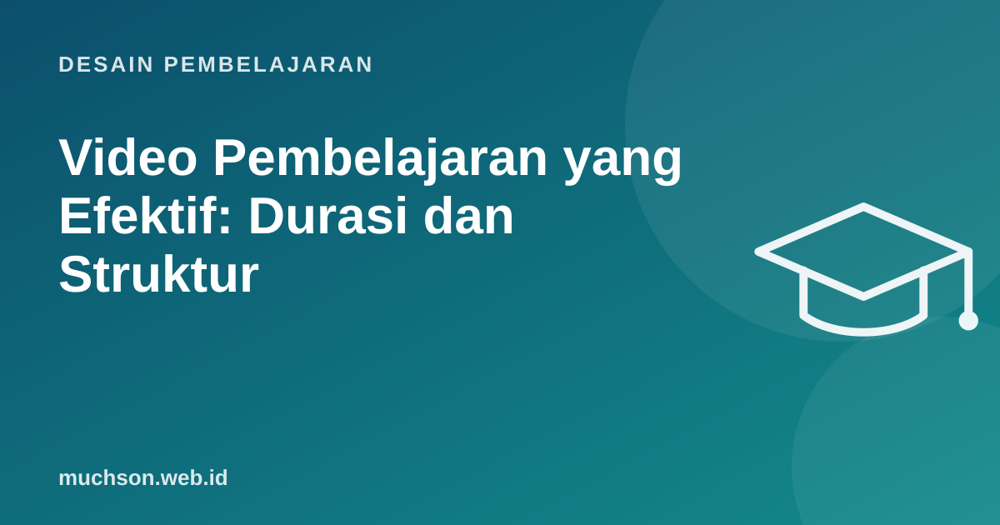

Beranda › Artikel › Desain Pembelajaran
Desain PembelajaranVideo Pembelajaran yang Efektif: Durasi dan Struktur
Video yang Anda rekam satu jam dengan susah payah mungkin hanya ditonton beberapa menit. Bukan karena peserta malas, tetapi karena cara orang menonton video pembelajaran berbeda dengan cara kita duduk di kelas. Data dari jutaan sesi menonton memberi petunjuk yang jelas.

Temuan dari 6,9 juta sesi menonton
Guo, Kim, dan Rubin (2014) menganalisis 6,9 juta sesi menonton video dari empat kursus di platform edX. Beberapa temuan utama:
- Video pendek jauh lebih menarik. Ringkasan studi ini menunjukkan waktu menonton median mencapai puncak sekitar 6 menit, berapa pun panjang videonya. Untuk video 12-40 menit, rata-rata penonton hanya menonton sebagian kecil.
- Gaya santai lebih menarik daripada rekaman kuliah formal di ruang kelas besar.
- Tulisan tangan atau gambar langsung (gaya Khan Academy) lebih menarik daripada slide statis.
- Bicara cepat dengan antusias lebih menarik daripada lambat dan datar.
- Video tutorial sering ditonton ulang dan dilompati, jadi harus mudah dinavigasi.
Struktur lima bagian untuk satu video
Aturan emas
Satu video, satu konsep. Bila naskah Anda butuh kata "selanjutnya kita bahas topik lain", itu tanda harus dipecah menjadi dua video.
Gaya bicara yang membantu
- Gunakan bahasa percakapan dan sapa penonton langsung: "kamu" atau "Anda".
- Tunjukkan, jangan hanya bicara: layar, gambar, demo nyata.
- Sorot bagian yang sedang dibahas (kursor, lingkaran, zoom).
- Hindari membacakan slide. Teks di layar cukup kata kunci.
- Wajah di awal membangun koneksi; sisanya boleh fokus ke materi.
Peralatan: cukup sederhana
| Prioritas | Rekomendasi | Alasan |
|---|---|---|
| 1. Suara | Mikrofon clip-on atau USB sederhana, ruangan tidak bergema | Penonton memaafkan gambar biasa, tetapi tidak suara buruk |
| 2. Layar | Perekam layar (OBS gratis, atau bawaan sistem) | Sebagian besar video teknis adalah rekaman layar |
| 3. Cahaya | Hadap jendela atau lampu di depan | Wajah terlihat jelas |
| 4. Kamera | Kamera ponsel atau webcam sudah cukup | Paling tidak penting dibanding tiga hal di atas |
Aksesibilitas dan kuota
- Sediakan subtitle; manfaatnya juga untuk yang menonton tanpa suara di tempat umum.
- Sediakan ringkasan teks atau transkrip.
- Kompres video dan sediakan resolusi rendah untuk peserta dengan kuota terbatas.
- Pastikan teks di layar cukup besar dibaca dari ponsel.
Tanya jawab
Bagaimana bila materinya memang panjang?
Pecah menjadi seri video pendek dengan judul jelas, misalnya "Bagian 1 dari 5", dan beri latihan di antara bagian.
Perlukah menyunting video dengan rapi?
Potong bagian salah dan jeda panjang. Tidak perlu efek berlebihan; kejelasan lebih penting dari kemewahan.
Apakah boleh memakai avatar atau suara AI?
Boleh untuk skala dan bahasa, tetapi uji dengan peserta. Pastikan pelafalan istilah benar dan beri tahu bahwa suara dibuat AI bila diperlukan.
Sumber dan bacaan lanjut
- Guo, Kim, Rubin (2014): How video production affects student engagement, L@S
- University of Virginia: Considerations for creating instructional videos
- Prinsip multimedia Mayer (artikel terkait)